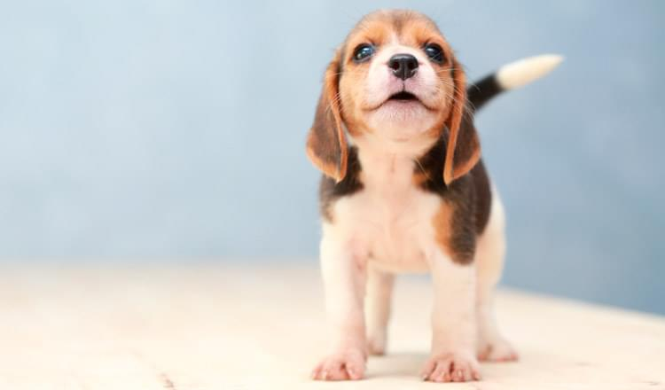
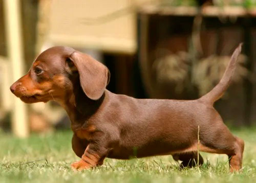
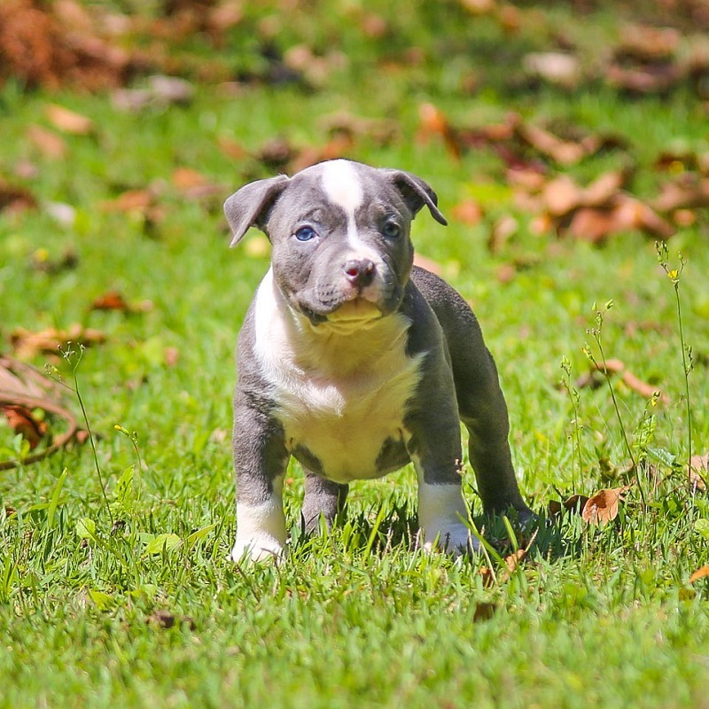

Explore o mundo encantador dos cãezinhos mais fofos do Brasil, com fotos irresistíveis e dicas para cuidar melhor do seu pet.
Cachorro Lindo 1 - Golden Retriver

O Golden Retriever filhote é uma bola de pelos dourados repleta de energia e doçura. Com olhos curiosos e um rabo balançando, ele encanta a todos com sua natureza brincalhona e amorosa, prometendo trazer alegria e lealdade à sua família para sempre.
Cachorro Lindo 2 - Beagle
O beagle filhote é uma explosão de energia e fofura. Com seus olhinhos curiosos e orelhas caídas, conquista corações com sua brincadeira travessa e afeto incondicional. Sua personalidade cativante e disposição para explorar o mundo fazem dele um companheiro encantador para toda a família.
Cachorro Lindo 3 - Salsicha
O salsicha filhote é uma bola de energia e doçura, com sua barriguinha fofa e perninhas curtas. Apesar do tamanho, transborda coragem e afeto. Seu olhar curioso e o jeitinho desengonçado conquistam corações, trazendo alegria e amor para qualquer lar.
Cachorro Lindo 4 - American Staffordshire
O American Staffordshire Terrier filhote é uma bolinha de energia e doçura. Seu temperamento leal e afetuoso começa a se manifestar desde cedo, enquanto suas orelhinhas e olhos curiosos encantam a todos ao seu redor. Com paciência e amor, ele se torna um companheiro leal para a vida toda.